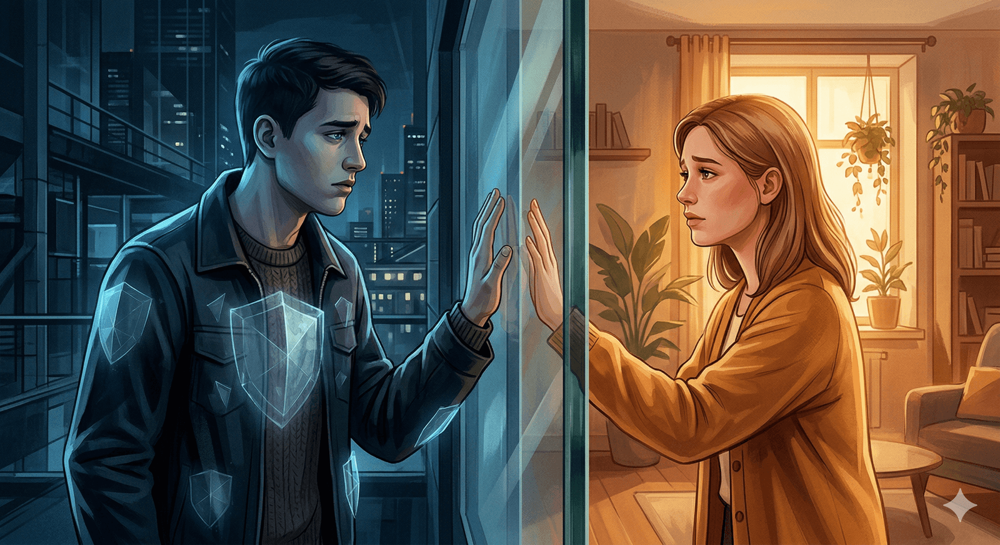

Điều phụ nữ không hiểu về đàn ông
Một bài luận khám phá cả sự khác biệt lẫn điểm tương đồng giữa đàn ông và phụ nữ
Có một sự im lặng luôn đi theo phần lớn đàn ông. Không phải vì họ không có gì để nói, mà vì họ chưa bao giờ được dạy cách để nói ra.
Tôi viết từ trong sự im lặng đó. Cho nó. Xuyên qua nó.
Và mỗi lần tôi ngồi đủ lâu với nó, nó lại đưa tôi trở về cùng một nỗi nhói: cái gánh nặng âm thầm, vô hình mà đàn ông mang theo, và khoảng cách rộng lớn giữa cảm giác đó và cách nó được thấu hiểu — đặc biệt là bởi phụ nữ.
Và có lẽ còn quan trọng hơn, là những gì đàn ông đã quên về chính mình.
Đây không phải là một cuộc công kích. Cũng không hẳn là một lời than phiền. Nó giống như một tiếng thở dài bất lực. Bởi tôi đã thấy nó quá nhiều lần, ở bạn bè, ở chính tôi, ở những người lạ sẽ chẳng bao giờ thừa nhận. Cách mà cuộc đời một người đàn ông, nhất là trong khởi đầu, thường xoay quanh một câu hỏi: Làm sao để tôi trở nên xứng đáng?
Bạn không cần ai nói thẳng rằng bạn chưa đủ tốt. Thế giới đã nói điều đó theo cả ngàn cách nhỏ bé rồi. Bạn chỉ… biết thôi. Ở đâu đó, giữa lúc còn là cậu bé và khi trở thành đàn ông, bạn nhìn quanh và nhận ra: mọi thứ bạn khao khát — sự tôn trọng, tình yêu, sự chú ý, sự bình yên — đều phải tự mình kiếm được.
Đó là luật chơi. Không ai trao cho bạn cả.
Không ai ngồi xuống và nói: “Bạn đã đủ rồi.” Thay vào đó, cuộc đời dạy bạn một ngôn ngữ kỳ lạ của trao đổi: làm cái này, trở thành cái kia, giành lấy điều này, che giấu điều kia. Và có lẽ, nếu may mắn, bạn sẽ được yêu.
Ở đâu đó giữa cuộc mưu cầu ấy, một cô gái bước vào câu chuyện. Và mọi thứ bỗng lệch đi.
Jordan Peterson đã diễn tả rất đúng: đàn ông, nhất là khi còn trẻ và chưa bị tha hóa, thường hướng tới việc quỳ gối trước hình ảnh vĩnh cửu của cái đẹp nữ tính.
Không phải là phục tùng. Mà là tôn kính. Giống như cách Tom Sawyer nhảy lên hàng rào khi Becky đi ngang qua, giữ thăng bằng, làm trò, chứng tỏ bản thân. Hy vọng cô sẽ thấy.
Hy vọng rằng mình đủ.
Và điều đó thậm chí không hoàn toàn liên quan đến cô gái. Mà đến với những gì cô đại diện. Bởi với nhiều người đàn ông, đặc biệt là khi họ còn đang trong quá trình trở thành chính mình, cô không còn là một con người riêng biệt.
Cô trở thành hiện thân của mọi thứ họ đang khao khát: cái đẹp, sự chấp nhận, sự bình yên, sự công nhận. Trong ánh nhìn của cô, họ hy vọng tìm thấy tấm gương phản chiếu rằng họ có giá trị.
Nhưng đó là một hy vọng nguy hiểm. Bởi nó trao chìa khóa giá trị bản thân của bạn vào tay người khác. Và khi cô quay đi, hay tệ hơn, chưa từng nhìn thấy bạn, nó không chỉ khiến bạn đau nhói.
Nó đập vỡ một điều gì đó. Không chỉ là ảo mộng tình yêu, mà còn là ảo tưởng rằng “đủ tốt” sẽ đảm bảo bạn có được tình yêu.
Phần lớn đàn ông không sợ phụ nữ. Họ sợ bị nhìn thấu và phát hiện ra mình không đủ. Đó là lý do mà sự từ chối không chỉ để lại vết xước; nó để lại dấu hằn. Nó nói với một người đàn ông rằng anh ta không phải là người anh ta tưởng. Và thế giới, đặc biệt với đàn ông, không hề rộng lượng với điều đó.
Sự dễ tổn thương không đem lại huy chương. Nó bị cười nhạo. Hoặc bị lờ đi. Hoặc bị thương hại trong im lặng.
Và thế là đàn ông học cách che giấu nó. Bằng kiêu ngạo. Bằng sự bù đắp thái quá. Bằng im lặng. Bằng tham vọng. Bằng cơ bắp. Bằng tiền bạc. Bằng những câu chuyện được trau chuốt hoàn hảo về việc họ chẳng hề quan tâm.
Nhưng đây mới là khúc quanh — và tôi nghĩ phụ nữ đôi khi bỏ lỡ, không phải vì ác ý, mà vì câu chuyện chưa bao giờ được kể đúng: phần lớn đàn ông không thực sự cố gắng chinh phục thế giới. Họ chỉ đang cố gắng đủ tốt cho cô ấy.
Cô gái ở bên kia đường. Cô gái trong quán cà phê. Cô gái họ viết thơ trong bóng tối. Cô gái khiến họ cảm thấy điều gì đó vượt lên trên sự sinh tồn.
Rồi đến lúc trái tim tan vỡ. Một cú ngã khiến ta nhận ra sự thật phũ phàng rằng lý tưởng kia không có thật.
Rằng để yêu một người phụ nữ thật sự, bạn phải giết đi hình bóng hoàn hảo kia. Và đó là một dạng cái chết.
Bởi chính lý tưởng đó là thứ đã giữ bạn đi tiếp bao năm. Là thứ bạn đã rèn luyện vì nó. Nâng tạ vì nó. Viết thơ vì nó. Là thứ đã kéo bạn ra khỏi giường, khiến bạn tiếp tục xuất hiện dù chẳng ai nhìn thấy.
Nhưng cô ấy không hoàn hảo. Cô ấy là con người. Cô ấy khóc trong bãi đỗ xe, gửi những tin nhắn mơ hồ khi lo sợ, và soi gương đầy hoài nghi. Cô ấy không phải là giấc mơ. Cô ấy là thật.
Và nếu bạn muốn yêu cô ấy, yêu thật sự, bạn phải gặp cô ấy ở đó, trên cùng một mặt đất. Không phải như một vị cứu tinh. Không phải như một vị thẩm phán.
Mà như một người cũng đầy khiếm khuyết như chính bạn.
Đó là lúc công việc thật sự bắt đầu. Khi cậu bé chết đi. Khi người đàn ông bắt đầu. Không phải phiên bản “macho”, ồn ào, giận dữ, khoác niềm kiêu hãnh như áo giáp.
Mà là người đàn ông tĩnh lặng. Người biết neo mình. Người có thể ngồi trong nỗi đau mà không trút giận ra ngoài. Người dám đánh mất ảo tưởng để tìm thấy điều gì đó chân thật.
Một số đàn ông chẳng bao giờ bước tới được chỗ đó.
Họ ở lại với cay đắng. Họ đuổi theo những ảo tưởng. Họ gạt tình yêu ra như một trò lừa. Họ chìm trong những phân tâm. Họ nhầm lẫn giữa sự được công nhận và tình cảm thật sự.
Họ đổi hết người này đến người khác, hy vọng rồi sẽ tìm thấy cảm giác như ở nhà.
Nhưng những người khác — những người thật sự trưởng thành — thì bắt đầu thấy rõ. Họ ngừng tìm phụ nữ để lấp vết thương của mình. Họ ngừng xem tình yêu như bằng chứng của giá trị. Họ ngừng dùng người khác để vá những chỗ vỡ trong mình.
Họ nhận ra: tình yêu không phải phần thưởng. Nó là trách nhiệm.
Và đó là nơi sự thật sâu hơn xuất hiện. Điều mà nhiều người, không chỉ đàn ông, thường bỏ qua: bạn không thể trao đi thứ bạn không có. Nếu bạn không biết yêu chính mình — thật sự, chứ không phải giả vờ — bạn sẽ làm tổn thương người cố gắng yêu bạn.
Vì thế, không chỉ đàn ông cần soi vào bên trong. Phụ nữ cũng vậy. Bởi quá thường xuyên, tình yêu bị dùng như một thứ thuốc xoa dịu vết thương chưa lành.
Người ta bước vào một mối quan hệ với hy vọng được “hoàn thiện”, mà không nhận ra rằng tình yêu đúng nghĩa không hoàn thiện bạn, nó bổ sung cho bạn. Nó thêm vào bạn. Nó mài giũa bạn.
Nó nâng đỡ bạn. Nhưng nó không thể khiến bạn thành một tổng thể trọn vẹn.
Đòi hỏi ai đó gánh vác phần gãy đổ của mình không phải là lãng mạn. Đó là bất công. Đó không phải là sự đồng hành. Đó là sự phóng chiếu.
Tất cả chúng ta đều mang theo những câu chuyện. Những nuối tiếc. Những vết thương. Những điều ước mình từng làm khác đi. Nhưng tình yêu không nên là nơi để trốn. Nó nên là nơi để bước ra.
Dù bạn nguyên vẹn hay chưa, tình yêu phải là nơi mà sự chân thành gặp gỡ với nỗ lực.
Anaïs Nin từng viết: “Chúng ta không nhìn sự vật như chúng vốn là, mà như chính ta là.”
Điều đó đúng cả trong tình yêu. Bạn sẽ luôn phóng chiếu thế giới nội tâm của mình lên người ở cạnh bạn. Nếu bạn đang chiến tranh với bản thân, tình yêu sẽ giống như chiến trường. Nếu bạn bình yên, tình yêu sẽ giống như mái nhà.
Vậy nên hãy làm việc với chính mình. Ngồi xuống với đống hỗn độn bên trong. Viết nhật ký. Suy ngẫm. Tha thứ. Không phải để làm thơ, mà bởi nếu không, bạn sẽ làm tổn thương những người chẳng gây ra nỗi đau của bạn.
Và đó là nghịch lý lớn nhất: tất cả chúng ta đều chỉ muốn được nhìn thấy. Đàn ông, phụ nữ, mọi người. Chúng ta khao khát được thấu hiểu mà không cần phải giải thích. Được ôm giữ mà không cần biện minh cho gánh nặng của mình.
Chúng ta muốn những vết thương được thừa nhận, chứ không phải được khâu lại bằng những câu nói rỗng. Chúng ta muốn nỗi sợ của mình được gặp sự hiện diện, chứ không phải lời giải pháp.
Tôi nhớ hồi đại học, tôi đã chứng kiến chuyện đó lặp đi lặp lại không đếm xuể. Những người đàn ông tốt, những người đàn ông bối rối, đi từ người phụ nữ này sang người khác, không phải vì ác ý mà vì thói quen.
Chỉ tuần trước, tôi có cuộc trò chuyện với một người bạn từ những năm đó. Chúng tôi ngồi đối diện trong một quán cà phê yên tĩnh, và có điều gì đó trong anh ấy đã thay đổi. Giọng nói không còn mang cái vẻ ngạo mạn ngày xưa.
Anh nói mình thấy trống rỗng. Dù anh muốn yêu ai đó, thật sự yêu, thì cũng chẳng còn biết cách nào nữa.
Anh đã dành nhiều năm chỉ để đuổi theo cảm giác lâng lâng, sự yên bình sau cuộc ái ân, niềm hưng phấn khi được khao khát. Rồi cùng nhau nấu bữa sáng, cười đùa, giả vờ rằng đó là điều gì sâu sắc hơn — và sau đó biến mất khi cảm giác phai nhạt.
Nó trở thành khuôn mẫu. Một vòng lặp. Ban đầu thì có tác dụng.
Hoặc ít nhất, nó khiến anh tin vậy. Nhưng theo thời gian, nó bắt đầu lấy đi từng mảnh của anh. Sự kết nối trở nên mỏng manh. Anh thôi không còn nhìn thấy con người thật của ai nữa. Mỗi lần ai đó cố đến gần, anh lại rút lui.
Không phải vì anh không quan tâm, mà vì anh không biết cách để được nhìn thấy nếu không khoác lớp diễn.
Anh nói với tôi: “Giống như tôi đã tự rèn mình để thèm khát sự chú ý, chứ không phải sự thân mật. Và bây giờ khi tôi thật sự muốn cái thật, tôi không biết cách để ở lại nữa.”
Nếu bạn là một chàng trai trẻ đang đọc những dòng này, đứng ở ranh giới mơ hồ giữa tuổi thiếu niên và một thứ gì đó giống như tuổi trưởng thành, tôi muốn bạn dừng lại.
Chỉ một thoáng thôi. Không phải để ghi chú. Không phải để giải mã một cuốn luật bí mật nào. Mà để cảm thấy một điều thật. Hãy để nó lắng xuống đâu đó sâu bên trong, không phải trong đầu bạn mà ở trong lồng ngực, nơi những sự thật lặng lẽ thường trú ngụ.
Đây không phải lời khuyên. Chúa biết bạn đã có quá nhiều rồi.
Đây cũng không phải một giọng nói khác đang cố sửa chữa bạn hay tương lai của bạn. Tôi chỉ đang trao cho bạn một khoảnh khắc. Một phản chiếu. Một sự thật nhỏ tôi học được từ một hành trình đầy chông gai: đừng chạy theo ý niệm về tình yêu.
Đừng xây dựng bản ngã quanh cái cao trào của việc được khao khát. Đừng uốn mình để vừa khít cơn đói của ai khác. Và đừng nhầm lẫn khao khát với ý nghĩa.
Bởi dục vọng rồi sẽ phai. Vẻ đẹp rồi sẽ tàn. Ảo ảnh luôn tan vỡ. Hình ảnh luôn nứt toác. Và điều còn lại, khi màn sương tan đi, là bạn. Chỉ bạn.
Và câu hỏi: bạn là ai, và bạn đang trở thành ai? Đó mới thực sự là điều quan trọng.
Rất dễ để ta lún sâu vào quá trình truy cầu. Được nhìn thấy, được khao khát, được chọn lựa khiến bạn thấy mình như đang được sống. Nhưng nếu bạn dựng giá trị bản thân trên nó, bạn sẽ mãi đói khát. Bạn sẽ bước từ gương mặt này sang gương mặt khác, hy vọng ai đó cuối cùng sẽ lấp được nỗi trống rỗng bạn mang theo nhiều năm. Nhưng sẽ chẳng ai làm được. Ít nhất, không theo cách bạn mong.
Bởi tình yêu thật sự không đến để lấp đầy khoảng trống của bạn. Nó đến để đứng cạnh khoảng trống ấy. Nó không đến để hoàn thiện bạn, mà để gặp bạn. Ngay tại nơi bạn đang ở.
Và có lẽ, tình yêu chính là vậy. Không phải màn trình diễn. Không phải giả vờ. Không phải đoạn kết hoàn hảo. Mà là quyết định lặng thầm nhưng đầy can đảm: ở lại. Hiện diện. Một cách trọn vẹn. Không cần mặt nạ. Không cần những câu đùa. Không cần sự duyên dáng hay vỏ bọc ngạo mạn. Không cần bộ giáp bạn đã mang quá lâu.
Chỉ cần là chính bạn.
Dẫu mệt mỏi, khiếm khuyết, nhưng vẫn đang cố gắng.
🔍 Phân tích bài viết
📌 Tóm tắt ý chính
Bài viết khám phá thế giới nội tâm ẩn giấu của đàn ông: gánh nặng phải “tự kiếm lấy” mọi thứ, nỗi sợ bị nhìn thấu và phán xét là “không đủ tốt”, và cách tình yêu đôi khi trở thành gương phản chiếu giá trị bản thân thay vì kết nối thật sự. Bài viết kết luận rằng tình yêu trưởng thành đòi hỏi cả hai phải tự hoàn chỉnh bản thân trước — không ai có thể “lấp đầy” khoảng trống của người kia.
💡 Insight & Góc nhìn đa chiều
Bài viết chạm vào một chủ đề ít được nói tới trong văn hóa Á Đông: sức khỏe tâm lý của đàn ông. Xã hội dạy đàn ông phải mạnh, không được khóc, không được yếu — điều này tạo ra một thế hệ đàn ông biết che giấu tổn thương bằng thành tích, bằng sự im lặng, bằng những mối quan hệ nông cạn.
Điều ẩn sau bề mặt: khi đàn ông không được phép dễ tổn thương, họ cũng mất đi khả năng kết nối thật sự. Đây là vòng lặp tai hại: càng không được thể hiện cảm xúc, càng tìm kiếm sự công nhận bên ngoài (tiền, địa vị, tình dục), càng cô đơn hơn.
Xu hướng đang hình thành: phong trào “men’s mental health” toàn cầu, sự trỗi dậy của các nội dung như bài viết này — dấu hiệu xã hội đang nhận ra khoảng trống trong cách nuôi dạy và kỳ vọng với đàn ông.
🇻🇳 Liên hệ Việt Nam & cá nhân
Ở Việt Nam, áp lực “đàn ông phải lo được cho gia đình” rất nặng nề. Nhiều người đàn ông Việt không bao giờ nói về cảm xúc với vợ — không phải vì họ không có, mà vì chưa bao giờ được học cách làm vậy. Điều này dẫn đến: tỷ lệ ly hôn tăng (vợ cảm thấy không được kết nối), tỷ lệ tự tử ở nam giới cao hơn nữ, và các vấn đề như rượu bia, cờ bạc như cách “xả van” cảm xúc.
Với thế hệ trẻ Việt: áp lực từ mạng xã hội tạo thêm tiêu chuẩn “đàn ông phải thành công sớm” — khiến nhiều chàng trai 20-25 tuổi rơi vào khủng hoảng bản sắc tương tự như bài viết mô tả.
⚖️ Phản biện
Tiêu đề “Điều phụ nữ không hiểu về đàn ông” tạo ra khung đối lập giới tính không cần thiết. Thực ra những vấn đề bài viết mô tả — sợ bị nhìn thấu, tìm kiếm giá trị qua người khác, không biết yêu bản thân — là vấn đề của con người, không phân biệt giới.
Bài viết cũng có xu hướng lý tưởng hóa “người đàn ông tĩnh lặng, trưởng thành” như một chuẩn mực — điều này lại tạo ra áp lực mới. Jordan Peterson được trích dẫn là tác giả gây tranh cãi, có quan điểm về giới tính không được nhiều nhà tâm lý học đồng ý.
Hơn nữa, giải thích vấn đề của đàn ông chủ yếu qua lăng kính “mối quan hệ với phụ nữ” là thu hẹp bức tranh — bỏ qua các yếu tố kinh tế, giai cấp, sức khỏe thể chất.
📖 Giải thích thuật ngữ
- Jordan Peterson: Nhà tâm lý học người Canada nổi tiếng với sách “12 Rules for Life”. Được giới trẻ nam ưa thích vì nói về ý chí, trật tự, trách nhiệm — nhưng cũng bị chỉ trích vì quan điểm bảo thủ về vai trò giới.
- Phóng chiếu (projection): Thuật ngữ tâm lý học — khi ta vô thức gán cảm xúc/mong muốn của mình lên người khác. Ví dụ: người cô đơn hay nghĩ “bạn bè ghét mình” trong khi thực ra chính họ đang ghét sự cô đơn.
- Anaïs Nin: Nhà văn người Mỹ gốc Cuba-Pháp, nổi tiếng với nhật ký và tản văn về tâm lý, tình yêu, bản sắc. Câu trích dẫn của bà là một trong những câu hay nhất về nhận thức luận.
- Sự dễ tổn thương (vulnerability): Khả năng cho phép người khác thấy phần yếu đuối, chưa hoàn hảo của mình. Nhà nghiên cứu Brené Brown chứng minh đây là nền tảng của sự kết nối thật sự và lòng can đảm.